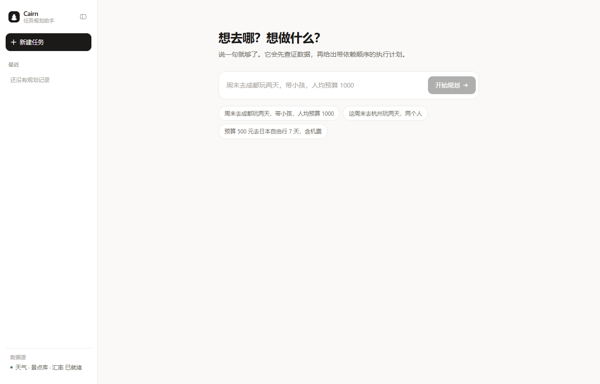
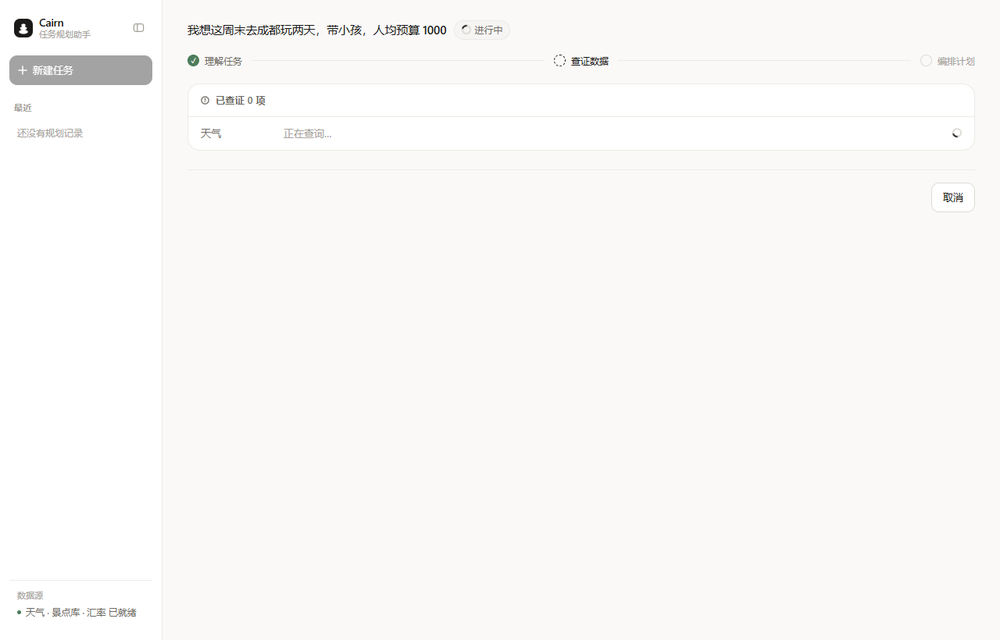
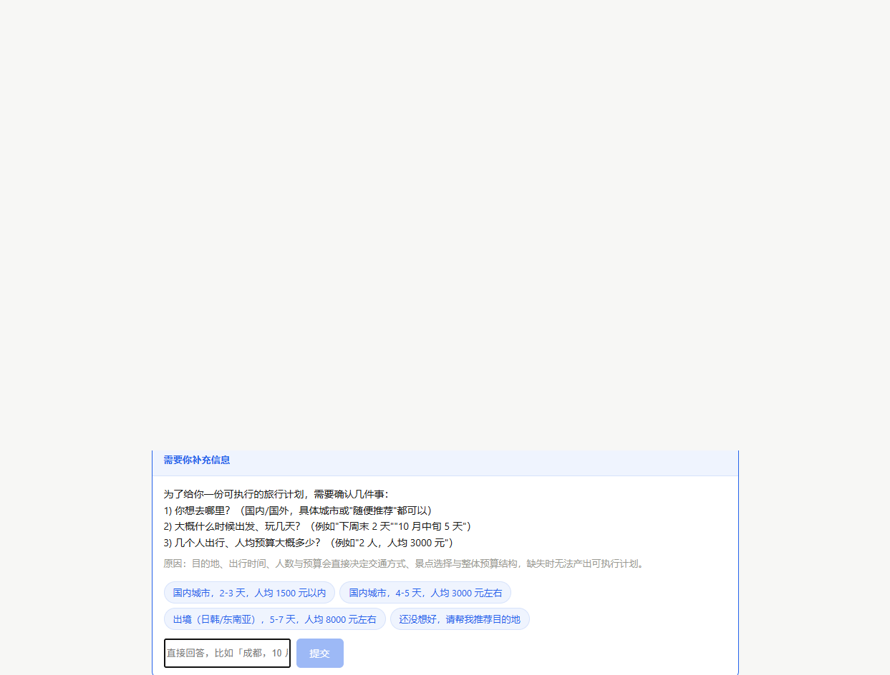
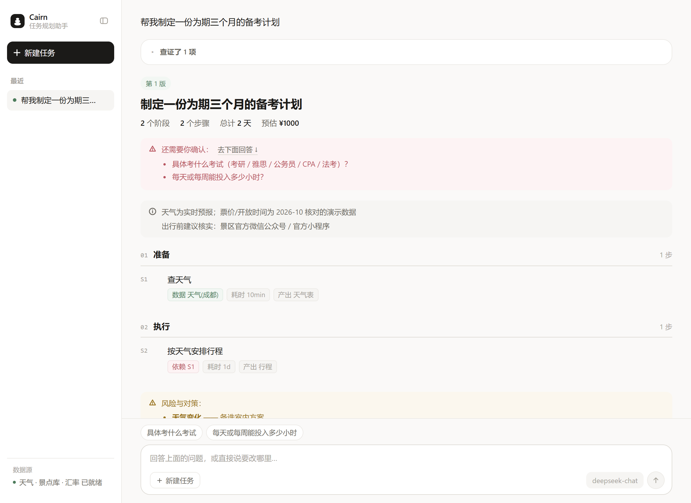
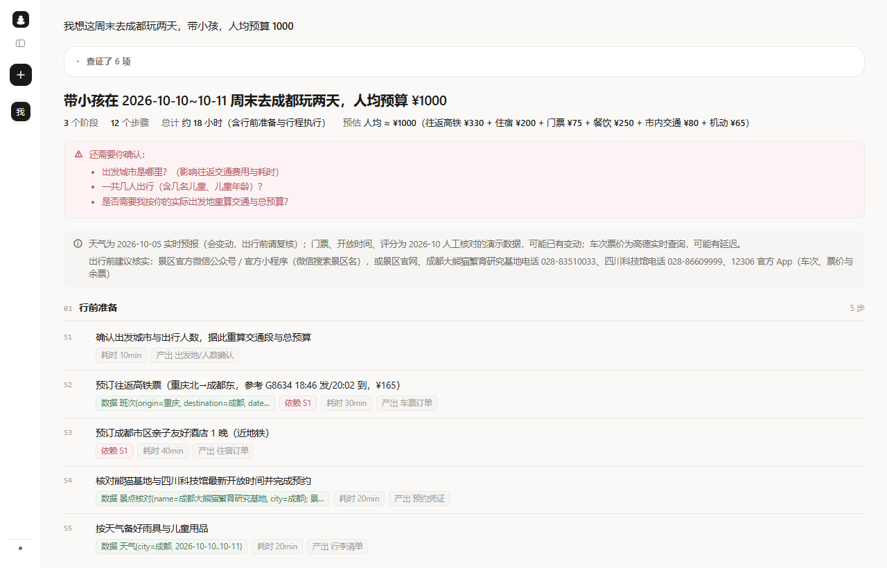

空状态改版 · 影响范围
结论：只有「还没提交任务」那一屏会变。其余四个界面一行不动。
1空状态 —— 唯一变化的地方会改
左边是现在的真实页面，右边是改完之后。

改前 示例 chips 以下是一整片空白（约 400px 高）
改后 同一位置换成卡片拼贴 + 背景极光；输入框的 placeholder 变成轮播
2其余四个界面 —— 一行不动不变
拼贴只在「没有计划」时出现；一旦提交任务，它整块消失，界面回到原来的样子。

运行中
三段时间线 + 已查证列表

等待澄清
提问卡片

有结果
计划 + 底部输入区

侧栏折叠
侧栏收成 60px
3状态对照
| 界面 | 变不变 | 说明 |
|---|
| 空状态 | 会改 | 新增卡片拼贴、背景极光、输入框 placeholder 换成轮播 |
| 运行中 | 不变 | 提交后 started 为真，拼贴整块不渲染 |
| 等待澄清 | 不变 | 同上 |
| 有结果 | 不变 | 计划视图、已查证折叠、底部输入区、版本菜单全都不动 |
| 失败 / 中断 | 不变 | 同上 |
| 侧栏（全部状态） | 不变 | 品牌、折叠按钮、最近列表、悬浮删除、数据源状态都没碰 |
| 桌面版 | 不变 | 同一套前端产物，行为一致 |
4三个附带影响
不算「别的页面变了」，但会动到空状态里已有的元素，先说清楚。
① 输入框的 placeholder 会变成轮播。
现在是固定的「周末去成都玩两天，带小孩，人均预算 1000」，改后三条示例每 4.8 秒交叉淡入淡出。
② 空状态的容器会从 620px 放宽到 660px。
拼贴最宽要 660px。所以标题「想去哪？想做什么？」和输入框会各宽一点、位置略移 —— 这是唯一会被「顺带改到」的已有元素。
③ 窄屏（<760px）需要降级。
那时侧栏收成 60px、主画布很窄，660px 的拼贴放不下。计划是直接隐藏拼贴（只保留极光和轮播），或等比缩小。这一条还没定，你如果主要在大屏用，可以不做。